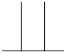
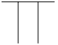
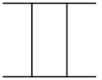

Беседа 2855 от 3877 · Беинса Дуно
Основа на здравето
Отче наш.
„Изгрява слънцето.“
Като се зададе една тема, вземете я най-първо като образ за размишление. Да кажем, тук е написано: „Чистотата на мислите, чистотата на чувствата и чистотата на постъпките, чистотата на топлината“. Тази картина не е пълна. Той, когато рисува човек, той може да рисува както иска, но всеки един образ в природата трябва да го представиш, както си го изрисувал. Има образи в природата, които не носят своя първичен образ. Да кажем, ценността на здравето. Ценността на здравето е основата на здравето. Здравето е един резултат. Сега всички, изобщо съвременните хора, имат едно понятие за придобитите неща. Дават цена само на нещо, което не е придобито. Но и онова, което има да се придобие и то е ценно. Придобитото, което досега е придобито е много малко. Ако се раздели, почти много малко ще остане за всеки. Казвам: Разсъждавайте за здравето. Като говорите за здравето, да почувствувате като здраве в себе си и да почувствувате всички негови качества. Казваш: „Здравето.“ – Ще изложиш какво мислиш за здравето, какво чувствуваш и най-после как го разбираш. И най-после как туй здраве е у тебе. Ако човек не е здрав, то и неговите придобивки ще бъдат такива. Каквото е здравето, такива ще бъдат и придобивките. Каквато е мисълта, каквито са чувствата, каквато е волята, такива ще бъдат и неговите придобивки. Такива ще бъдат и неговите отношения. При това Бог изисква всички ние да бъдем здрави. Както Той ни е направил. Всякога, когато иде едно същество от невидимия свят, то ни разглежда от гледището, както Бог ни е направил. Следователно, каквото ново придобиеш към туй. Сега, как наричате вие тези придобивки? Представете си, че вие сте турили на гърба на един вол учеността. Учен вол е. Тогава туй същество като слезе и види този учен вол, няма да търси вола, но ще търси господаря му. Понеже господарят му е учил, този вол да стане учен. И тогава човек ще отговаря за учеността на вола. Пишат на гърба на вола „лош вол“. Пак ще търсят господаря. Сега човек има двама господари в света. Единият господар е проявеният Бог, другият господар е дяволът. Бог писал „добрият“, дяволът писал „лошият“ вол. Бог писал „любящият“ вол, дяволът писал „омразният“ вол. Какво ще разберете вие от това? Вие всеки ден имате известни състояния, не може да си дадете никакъв отчет. Вие сте да кажем неразположен духом. Всеки един от вас трябва да се изпита какво може да издържи. Да кажем, вие имате един котел, опитвате какво налягане, какво напрежение на парата може да издържи. Следователно, напрежението не трябва да дойде до онази максималност, защото може да се пръсне котела. Не само ще се пукне, но някой път ще се пръсне. Ако парният котел на някоя превозна машина се пръсне на някоя гара, гарата може да се дигне, покрива и всичко туй ще се дигне.
Казвам новото сега: Знанието трябва да дойде, за да се подмладите. Всички трябва да имате желание да се подмладите в Любовта. Гледам всичките хора са остарели в Любовта. Казвате: „Младостта, то беше едно време. Учението ни интересуваше едно време, здравето беше до едно време“. Остарявате вече, изпяхте си песента. Хубаво, всички тия неща са статически положения. Ти си актьор, за една вечер на сцената си играл, някаква видна роля, която няма втора, или пък си играл някаква рол – човек незначителен, незавидна роля. А пък видните и незавидните роли имат еднаква цена в общото. Сега всички тук имате желание да играете видни роли. Вземете в тялото има състезание на три билиона и 600 милиона клетки, които образуват главата. Онези клетки, които не може вече да се съберат в главата, те са образували дробовете. Онези клетки, които не може да се съберат в дробовете, те се образували в стомаха. Онези клетки, които не са могли да се поберат в стомаха, образували са мускулната система. Има едно разпределение. Завземали са място. Казвам: Каква разлика има между ония клетки, които са в главата и в дробовете? Предназначението на клетките в главата е да мислят. Ония клетки, които са в дробовете предназначение имат да чувстват. Ония клетки, които са в стомаха са работници, дават резултат. В главата е мисълта. Между двата бели дроба е поставено сърцето. Сега ние сме се отделили и считаме, че Бог е вън от нас, търсим Го някъде. То е отчасти вярно. Бог е извън нас, но е и вътре в нас. Какво разбираме извън нас? По отношение на нашето тяло считаме Бога извън нас. Но по отношение на тялото, считаме че е вътре в нас. Разбираме „Бог е вътре в нас“, когато мислим за тялото. Някой път казваме за душата. Считаме, туй, което е вън от душата е вътре в душата. И пак считаме тази душа да е материална. Казвате, че човек има душа. Как обосновавате, че човек има душа? Всеки един от вас, макар и да не е учен, той все ще го обоснове, все ще разправя, че има душа. Питам: 10 души от вас, които говорят за душата, какво ще кажат? Сега мене не ми е целта да ви обяснявам какво е душата, защото всички вие знаете какво нещо е душата. Безразлично дали можете да определите или не. За мене, когато аз казвам, че вие разбирате душата, аз си служа с един максимум, или с една мярка. Вие всички имате по един език. Ако ви дам по една бучка захар да близнете, вие всички знаете какво нещо е сладчина. Вашите философски понятия и разбирания може да са различни, но всички едновременно чувствувате една специфичност. Тази особеност, тази специфичност е сладчината. Ако имаме един уред, с който да измерим, ще видите, че сладчината в някой е по-силна, в някой е по-слаба, но всички разбирате какво нещо е сладчината. Сега, аз какво ще ви обяснявам какво нещо е сладчината. Най-първо при сладчината лигите ще ви потекат. Туй отчасти е верно. Ако аз ви дам една горчивина, при горчивината ще ви потекат ли лигите? Ако лигите ви потекат при горчивината, тогава? Сега туй няма противоречие, защото горчивото какво е? Ще каже някой, че е противното на сладчината. Казвам: Сладкото дръжте го в себе си, пренесете го от физическият свят в по-горния. Едно чувство може да бъде сладко, една мисъл може да бъде сладка. Сладките мисли са здравословни, а горчивите мисли какви са? Казвате: „Горчиви мисли и горчиви чувства има някой човек“. Те не са здравословни. В тях се зараждат болезнените състояния. Едно горчиво чувство е причина за свиването на капилярните съдове. От физическо гледище горчивите чувства образуват свиването на капилярните съдове. При свиването на капилярните съдове, съдовете изгубват всякога своята пластичност и вследствие на това кръвта не може да се движи добре. При това капилярните съдове имат известни мерки. Имат такава чувствителност – деликатни нишки, с които всеки един капилярен съд трябва да изпитва кръвта, която минава. Някой път тия съдове изгубват тази чувствителност. Запример, капилярните съдове имат такава чувствителност, както тия папили на пръстите ви. Като пипате някой път някоя ръка, някой предмет, който е гладък, може да чувствувате на този предмет какви са неговите качества. И ако си турите ръката на ръката на някой човек, който е добър, ще почувствувате, че нещо хубаво излиза от него. Ако си турите ръката на някой лош човек, ще почувствувате нещо лошо. Туй, което почувствувате, ще бъде или магнетизъм, или електричество, което е минало във вашите пръсти. Но туй, което ще почувствувате някой път може да има грамадно влияние върху вас. Всяко съприкосновение вие се допирате до дърветата или камъните. Седите и мислите, че туй някакво последствие ще има. Всякога ще има известно последствие. Излизате във въздуха, помнете: въздуха има влияние върху вас. Вие може да не съзнавате в даден случай. Слънчевите лъчи имат влияние. Ако вие в даден случай, след като изгрее слънцето, съсредоточите вашата мисъл, че вие живеете в Бога, тогава слънчевите лъчи имат едно отношение. Сега като гледам слънцето, друго влияние ще има върху вас. Срещате един човек, мислите, че Бог го е създал. Този човек ще окаже едно влияние върху вас. Казвате: „Човек в света е дошъл да се мъчи вътре“. Или някой път казвате: „Мене ми дотегна да живея“. Какво трябва да направи човек, на когото му е дотегнало да живее? Вас като ви дотегне и не ви се живее, какво правите? Щом някому е дотегнало, ще иде на Витоша да се разходи. Значи туй, което е дотегнало, да иде по храстите тук, там, закачи го. Казвате: Живее ми се. И като се върнете, олекнало ви е малко, просветне ви ума. Измени се състоянието ви.
Та казвам сега: Наука ви трябва. Вие казвате: Какво сме научили? Какво сте научили? 8000 години какво сте научили? 8 часа сте спали. Някой път по 10 часа, остават 14 часа. 4 часа вие употребявате за ядене и пиене, остават 10 часа. В 10 часа какво сте мислили? Вземете за 8000 години всеки ден сте имали по 10 часа да мислите. И тия часове ще ги превърнете в дни, в месеци и тогава какво число ще имате? Ще имате едно грамадно число. И тогава Господ ще иска от вас един отчет за тия 10 часа какво сте правили. За 14 часа отчет няма да давате, то е подсъзнанието, но за 10 часа ще дадете. Или най-после ще дадете отчет за 3 часа на ден какво сте мислили. Някои ми казват: „Много е лош този ум, който имам“. Или ти вървиш, направил си си нови обуща и казваш: „Много са ми удобни тия обуща“. Или, „как намираш този майстор?“ Е, да кажем шапка имаш. Мислиш: „Защо така Господ е направил?“ Писал ти някой някое писмо, написал тъй, както той не е мислил. Не ти е написал туй, което трябва – „Уважеаеми господине“, или „моля Господине“. Какво трябва да се мисли? Единственото нещо, трябва да се учите да мислите. За да мисли човек, трябва да бъде здрав. Мисленето трябва да бъде здраво. Чувствуването трябва да бъде здраво и в постъпките човек трябва да бъде здрав. Вие не можете да бъдете здрав, ако не разбирате закона на Любовта. Основата на здравето е Любовта. Сега ходите лекари да ви лекуват. Най-първо, когато отивате да се лекувате, питали ли сте Господа какъв лекар да викате. Че вие правите престъпление. Ще питате Господа, при кой лекар трябва да идем? Защото да кажем, вие страдате от нервни болести и ти отидеш при някой лекар, който е специалист за стомаха. Има лекари, които са специалисти за гърбовете, има лекари, които са специалисти за мозъка. Вие на общо основание казвате еди кой си лекар. Някой ще каже: „Нас не трябват лекари“. Трябват ти лекари.

Най-първо има един специалист лекар в умствения свят и специалист в духовния свят, и специалист във физическия свят, на физическото поле. Най-първо ще викаш лекаря в умствения свят, той ще си даде мнението и ще каже: „Ще повикате моя колега, но моята рецепта е такава и такава“. Пише той така /Фиг. 1/ Това е неговата рецепта.

Рецептата на другия е такава /Фиг. 2/ Рецептата на третия е такава /Фиг. 3/ Три рецепти имате за здравето.

Първо на умствения свят, в духовния свят и на физическия свят. Знаеш колко зависи от тия формули? Една грандиозна формула. Първият като дойде, тури формулата си. Той е като чаша. Другият е наведен надолу. А третият лекар ще запуши отгоре и отдолу. Формулата на първият лекар е като една чаша, която приема нещо. Другият е обърнат надолу. Но тия вещества, които се съдържат в чашата са лепкави, не излизат навън. А пък този, третият, той ги запушил. Той се е нагорещил. Но има вече една лампичка, ще започне да се топи. За да не би туй вещество да се разпилява, той ще го запуши. Той е учен човек.
Сега вие искате да скриете една мисъл. Какво означава, когато искате да криете? Какво означава скритността? Направиш нещо, искаш да го скриеш. Хубаво е да го скриеш, не е лошо. Ценните неща се крият. Ти ще го запушиш отгоре и отдолу, да не би от туй, ценното да се изгуби нещо.
Та казвам: Основата на здравето е Любовта. Ако ви боли крака, туй показва, че сте започнали да губите от съдържанието на Любовта. Ако ви боли лакътя, започнали сте да губите от съдържанието на справедливостта. Ако ви боли главата, значи започнали сте да губите от смисъла на Любовта. Боли ви главата, смисъла на Любовта губиш. Лакътя те боли, справедливостта започваш да губиш. Крака те боли, съдържанието на доброто губиш. Или коляното те боли, ти викаш лекар, той ще ти даде горчиви хапчета. Викаш един лекар за лакътя, ще мажеш лакътя с газ. Тия работи с газ не се мажат. Сега един от вас иде да маже. Когато гледате някого, майките обичат да милват децата. Защото като маже майката, като го помилва, масло излиза. Хубаво е някой път известни части, когато заболеят да се мажат. Душата мажете, аз разбирам трябва да имате един мислов вътрешен процес. За всичките неща аз ви говоря на един език, но вие ме разбирате другояче. Понякой път правя преводи, превеждам разни примери, които нямат еднакво съдържание. След като се приведе един пример, вие му давате едно тълкувание. На всеки пример трябва да се даде неговата ценност. Например, в музиката имате една нота. Какво означава? На първата линия какво имате? Под петолинието вие имате „ре“. „Ре“ има своята ценност, има своя звук. Ако вие го вземете, тогава ще ви разберат. В невидимия свят, в разумния свят, вие искате отдалече да говорите. Ще кажете „ре“. Значи, отваряте му път. Моля, накъде трябва да вървя? Тогава ще кажеш „ре“. – „Моля къде е вратата?“ Тогава ще кажеш „ре“. Трябват ти удобства (Учителят пее „ми“, след това пее „фа“). Малко хляб ми трябва за торбата. Още като казваш и хлябът ще дойде. Щом кажеш „ми“, веднага работите ще се уредят. Като пееш „фа“, значи има смисъл да пееш. Ти пееш „фа“ и „ми“, но нищо не излиза. Ако може да дадете трептенията на „до“, вие може да направите един тон магнетичен. В един тон можете да вложите мисъл, мислов елемент. В един тон може да вложите чувствени елементи, може да вложите и елементи на изразителност. Че ако вие при един болен човек кажете „до“ (Учителят силно вика „до“.) Аз произведох във вас смях. Произведох силен контраст. Смених във вас едно състояние. Тъй, изведнъж ви извиках. Ако някой отведнъж ви каже „бу-у-у“? Разправяше ми една млада сестра: „Една моя приятелка ума ми щеше да извади. Вървя през гората, замислила съм се, фантазирам нещо“. Едната приятелка върви, без да знае другата и изведнъж я пипа. И тя ѝ казва: „Така ли се пипа, ще ми извадиш ума!“ Онази няма никакво лошо желание, а другата се уплашила, мисли, че има нещо страшно. Та от невидимия свят, като ви бутнат някъде, вие нямате достатъчно вяра. Хване ви някой, какво има да се плашиш? Да бъдеш тих и спокоен. Да кажеш: „Господ ме е хванал, пипнал ме е Господ“. Заболи ви крака, пак да се зарадвате, че ви е заболял крака. Кракът за пръв път. Вие ходите, а пък сега като ви боли кракът как стъпвате? За пръв път вие ще помилвате коленцето и ще кажете: „Братко, много си ме слушал“. Вие никога не сте се спирали, коляното да го помилвате. Колко хиляди душички има, които седят в твоето коляно. Не са чули нито една сладка дума. Вас не ви иде на ум да го помилвате. Тогава дойде една болест да ви накара насила, та вие от немай къде ще го милвате. После ще съжалявате, че сте помилвали коляното. Казвате: „Да ми не дава Господ да ги милвам“. Туй не е разбиране. Понякой път е хубаво. Понякой път има един вид, здравето се явява. Някой път ти чувствуваш известен прилив на душата да си помилваш крака. Като помилваш крака ти е приятно. Или някой път имаш прилив да помилваш ръката. Като помилваш, усещаш приятност. Има два начина. Болестите са негативни. Има един начин здравословен. Някой път е хубаво да прекарате ръката около ушите. Кажи: „Благословен Господ Бог, Който е създал моите уши. Благословен Господ Бог мой, Който е създал моите очи“. Помилвай носа си и кажи: „Благословен Господ мой, Който е създал носа“. Вие понякой път дърпате носа. Аз искам да си създадете един начин на самовъзпитание. Ако не знаете вие сами да се възпитате, никой не може да ви възпита. Ще влезете в разумния свят и като влезете между разумните същества от вашата обхода, каквато линия на движение направите, в оня свят всичко е в движението. Всяко движение, най-малкото помръдване показва какво мислите. Да кажем мърдате устата или пръстите, или ръцете, или да кажем ръката спуснете надолу или турите ръцете на гърдите, или хванете главата, или турите ръцете отгоре. Туй има смисъл. Няма движение в света, колкото и да е малко, да няма вътрешен смисъл. И от неестествените движения в света произтичат от тази несъобразност. Изгубва се красотата на човека. Един ден вашето лице се набръчква по причина на вашите движния. В мене желанието е да се подмладите. А вие казвате, че остарявате вече. В невидимият свят няма място за стари хора. Трябва да мине една епоха от няколко милиона години, за да се образува един стол, едно място за стар човек. В невидимият свят има 24 старци. Това са епохите които са минали. По няколко милиона години, 24 старци. Милиони и милиони и милиони същества са минали, и само един остава като един плод. В тази епоха сега се образува 25-ия старец, като се завърши нашата епоха. Ако вие искате за една кандидатура, за стар човек – няма. За млади хора има разни столове, които чакат. Ако станете стари, губите си времето. За стари ако сте, всички до един ще пропаднете, който и да си даде кандидатурата, не само вие, но целият свят. Приготвена е някъде една кандидатура, но няма да бъде нито един от вас. За стари хора минавате. Че брада сте имали – нито брадата, нито набръчканото лице, нито годините помагат. Нищо не помага. Христос казва: „Ако не станете като малките деца, не можете да влезете в Царството Божие.“ Царството Божие се подразбират ония хубавите условия, които вие търсите. Като влезете в Царството Божие, може да си създадете тия форми.
Казвам: Положете вие Любовта за основа на вашето здраве. Някой път вие обичате някой човек, обичате някой ваш брат. Има си свои причини. Един пример аз ви привождам. Един ден Буда бил много неразположен. Той е индуски Христос. Кой как дойдел, казвал: „Нямам време“. Всичките не ги приемал. Започнали да се чудят учениците му. Не иска да приеме никого. Иде един одърпан човек, Буда става, посреща го, услужва му, нахранва го, говори му. Учениците казват: „Какво пристрастие! Този, толкоз хора върна, на този дриплю такова внимание“. Тогава Буда им обяснил. Този човек, на когото станах, че го посрещнах, едно време в далечното минало аз бях един свещеник, на умиране, гладен. Този човек беше гълъб и той пожертвува живота си за мене, за да продължа живота си аз, да изказвам молитви към Бога. Затова аз го посрещнах, заради голямата Любов на саможертва. Затова аз правя това. Пък онези, които ги изпратих, те ми направиха хиляди пакости, затова им казах: „Вървете си, вървете си“. Казвам: Не може да обичате всичките хора еднакво, понеже те нямат право. Който не се е жертвал заради мене, не може да го обичам. Да ви говоря на научен език. Казвате: „Трябва да обичаме всичките хора“. То е от гледището на Бога. Да обичаме всички хора, в които Бог живее. Понеже Бог се е жертвувал заради нас. Там, дето Бог живее, трябва да покажем Любовта си. То е Божествената Любов. Но остане ли човек сам, ти не може да го обичаш. И да искаш, то е невъзможно. Като казваме за Бога, може да Го обичаме, понеже Той се е жертвувал заради нас и постоянно се жертвува. Ако ние откажем своята обич към Него, правим престъпление. И всичките страдания, които имате на какво се дължат? Че когато Господ дошъл при вас, вие нищо не сте направили за Него. Ще станеш, ще Го посрещнеш, ще услужиш, ще Го изпратиш на 1 километър, на 2 километра. Ще кажеш: „Много ми е приятно, че дойде. Аз съм на вашата услуга“. Казвате: „Аз не обичам този“ и той не ви обича. Нито ти си се пожертвувал заради него, нито той се е пожертвувал заради тебе. Ако вие не се обичате един друг, обич не може да имате. Що е майчинството? Майките сега се учат на закона на самопожертвуванието. Девет месеца ще носи своето дете, след туй се самопожертвува. Туй дете защо се пожертвува? Туй дете направи голяма жертва заради нея. Туй дете, което майката носи, то се е пожертвувало за майка си, затуй тя го носи. Вие не можете да турите в утробата на майката един, който не се е пожертвувал. Може да турите в утробата ѝ само един, който се е пожертвувал. Майката казва: „Не го искам“. Много майки помятат, понеже туй дете нищо не е направило за нея. Тя казва: „Не го искам. Искам да се маха. Този несретник не го искам“. Вие, които не разбирате Божия закон казвате: „Не го искам“. Законност има там, дето действува Любовта. Законност има там, дето действува Божията Мъдрост. Законност има там, дето действува Божията Истина. Дойде ли този закон, всеки един от вас трябва да го изпълни. Вие го знаете. Понякой път аз ви говоря, вие мислите, че искам да съдя някого. Съдбата в света постоянно върви. Има цяла една организация от същества, които съдят човека. Тъй както в невимият свят има коли за нечистотии. Казват: „Имате ли нечистотии?“ Той ще дойде, и ще прегледа. Не само туй, което си оставил отвън, но той има право да влиза вкъщи и да прегледа. Ще влезе вътре и ще провери. И ако намери, ще каже: „Съберете го“. Не може да остане тази нечистота. Всичката нечистота, която имате, трябва да я изхвърлите, за да бъдете вие свободни. Какво нещо е покаянието на хората? Покаянието на хората е очистване (от) греха. Грехът е една голяма нечистота. Значи, да се покае човек, да няма грях. Това е цяла една отрова. По-голяма отрова, по-голяма язва няма. Един бацил е той. Ако ти го държиш, ти ще се повредиш. Ти трябва да се освободиш от него. Сега не искам да ви говоря за греха. Трябва да имате особени ръкавици, после да го поднесете под особен микроскоп и да го наблюдавате. Има особени шишета, трябва да го държиш затворен. Казвате: „Аз имам вяра“. Вярата е път. Един проводник за разбиране. Без вяра, нещата не може да се разберат. Запример, ако вие сте ученик и не вярвате, казваш: „Тази задача не е за мене“. Ти трябва да знаеш дали разрешаваш правилно. В алгебрата, в аритметиката има знак. Турен знак минус и плюс. Ако туриш минус, какво означава? Че нещата се изваждат. Ако турите плюс, нещата се събират. Ако турите знака на умножението, нещата се умножават. Ако турите две точки, нещата се делят. Казвате: „Каква е разликата между събирането, изваждането, умножението и делението?“ Разликата в действителния живот е грамадна. Имаш една болест, трябва да се извади. Искаш здраве, нещата трябва да се събират. Искаш щастието, то да дойде. Нещата трябва да се умножават. Искаш да имаш справедливост. Нещата трябва да се разделят. Ще туриш две точки. Какво означават две точки? Между две точки може да се тегли само една права линия. То е знакът на умножението. Туй е закон на умножението. То е динамическата енергия. И при събирането имате същия знак, но в умножението линиите са в полегата форма. А пък при събирането, те са перпендикулярни. Едната плоскост е хоризонтална, другата е вертикална. В събирането нещата са статически. Събираш две неща, статически е. А при умножението вече са в движение. При плюса показва, че тялото е в покой. При минуса, и то е в покой. А при умножението ти трябва дълго да работиш.
Та казвам: Всички страдате от какви ли не болести. Вчера ме срещна една млада мома, глава я боляло. Казва ми: „Какво да правя?“ Казвам: Вземи и си свари пелин, сутрин и вечер по една кафяна чаша. – „Ама ще мине ли?“ – Пий сега. Дали ще мине или не, ще видиш. Пий сега пелина. Казва: „Аз съм болен“. Ти си болен, затова ме търсиш. Ако не беше болен, нямаше да ме търсиш. Аз се радвам, че мога да ти услужа. Понеже в миналото не си услужил, пелин ще ти давам. – „Защо да пия пелин?“ Казва: „Защо не положиш ръката си да мине?“ Аз не полагам ръката си на онзи, който нищо не е направил за мене. Който нищо не е направил, не си турям ръката. Защо ще турям ръката си да я цапам? Аз не искам да цапам ръката на Онзи Господ, Който живее в мене. Той ми казва: „Няма ли да си туриш ръката?“ На този човек, виждаш ли го, аз от толкоз хиляди години съм направил хиляди добрини, той нищо не е направил. Една сладка дума не ми е казал. Сега казваме: „Да се обичаме“. Жертва се изисква. Любов се изисква. Сега вие мислите кой е по-добър. От осем хиляди години, каквито сте били в рая, като сте излезли от рая, все такива сте. Аз разглеждам целия живот. Аз не разглеждам една ваша постъпка. За мене е безпредметна тя. Както и да постъпиш, за мене е безпредметно. Целият живот като го разглеждам за мене представлява интерес. Казваме: „Този човек е добър, и аз желая да бъда добър като него“. Друг е лош. Казвам: Не искам да бъда като него. Не го съдя. Не му казвам, че е лош. Като е добър казвам: Искам да бъда като него. Каквото върши, копирам го. Като е лош, не искам да бъда като него. Не го съдя. За мене туй е предметно учение. Аз искам да се избавя от ония погрешки, които той направил, защото има възможност и аз да ги направя. Всеки един човек, който не иска да служи на Бога, той ще направи една погрешка. Имайте желание да служите на Бога. Само при служението на Бога ще ви се оправят работите във всяко едно отношение. Като служиш на Бога, ако си музикант другояче ще свириш, другояче ще пееш. Като минава някой музикант, още като го видиш, от трептението на тоновете като слушаш всеки си пожелава така да свири. Някой като го чуе, свири хубаво. Казва: „И аз искам да свиря така“. Някой пее хубаво. – „И аз искам да пея така“. Да пееш хубаво, това е един подтик. Аз бих желал всички да пеете.
Тук преди два деня иде една млада жена за пръв път. Тя се женила. Търси ме. Не искам да я срещам. Ухапало я е едно мъжко куче. Не искам да се занимавам. После отивам, проверявам. Така е, както мислех. Мъжко куче я ухапало. Казвам ѝ: Ще пееш? – „Как? Животът няма смисъл, не ми се пее, не ми се живее“. – Дали ти се живее или не, научи се да пееш. Като станеш сутрин – попей си. Ти идеш сега да ме питаш по един въпрос (който е предрешен). Туй куче ти си го гледала, ухапало те е. Какво разбирате под думата „мъжко куче“? Казвам: Този, младият мъж, който ти е професор, той те е накарал да дойдеш при мене. Ти като станеш, ще си съсредоточиш ума, да мисли за Господа. Казвам: Много добре си устроена, но за Господа не си мислила. Искаш да бъдеш щастлива, но за щастието на земята и въпрос не трябва да правиш. Рекох: Тебе те мъчи въпроса, че той обича други жени. Радвай се, те са твои сестри, които той обича. Ти си от голяма фамилия, не сте една, две, три. Толкоз сестри и той обикнал твоите сестри. Какво лошо има? Моралът е да се радваш. Ти как разбираш Любовта? Дотогова, докато един мъж обича една жена и я подига, не я отдалечавай от Бога. И тя в неговото присъствие се заражда желание да служи на Бога. Този мъж е благословен. Всяка една жена, която обича един мъж и го подига, тази Любов е от Бога. Мъжът се приближава към Бога. Аз разглеждам Любовта, която подига. Радвай се, че той като обича другите жени, ще обича и тебе. Като престане да обича другите жени, няма да обича и тебе. Казвам: Щом мъжът обича, да имаш пълна вяра в него. Щом се съмняваш и казваш: „Не трябва да обича другите“. Нека да обича и другите. Но другите да не обича повече. Щом знае, че мъжът ѝ другите не обича повече от нея, приятно ѝ е. Но щом усети, че с един градус Любовта към другите е по-голяма, веднага я заболи сърцето. Радвайте се в света, че Бог във всеки един мъж, който люби се проявява. Във всяка една жена, която люби, Бог се проявява. Когато ние се проявяваме, когато ние любим, винаги влиза нещо користолюбиво. Туй всеки може да го провери. Една млада мома се радва на един момък, не се радва на Бога. Казва: „Да го имам“. Туй е користолюбие. Тебе да ти е приятно, като мехлем да ти пада само като го видиш. Но щом се зароди най-малкото желание да туриш юлар и да го водиш, че да го пипнеш по врата, да го вържеш. Оставете младите момци свободни да ходят, дето ги е Господ пратил. Оставете младите моми свободно да ходят, дето Господ ги е пратил. Оставете майките да ходят в пътя, който Бог е определил. Оставете бащите, слугите, оставете всичките да ходят в пътя, който Бог им е определил. Сега желая на всички ви да тръгнете в този нов път. Аз понякой път се връщам и усещам голяма реакция. След като съм говорил, не сте ме разбрали. Търся начин сега. От едно добро аз направя една пакост. Той преял, боли го коремът. Казвам: Погрешката е моя. Аз му дадох 3–4 кг. череши за 4 деня, а той за един ден ги изял. Заболял го коремът. Трябваше да му дам половин кило череши. Някой път като говоря, много давам, някой път малко давам. Като правя добро някой път, много съм добър. Някой път трябва да дам малко. Та казвам: Всички по този начин търсете погрешките си. От обич съм дал повече. Някому от предвидливост, че може да се повреди, съм дал по-малко. Дайте толкоз на човека, колкото му е потребно. Казвате: „Сега аз зная какво ще говори Учителят“. Аз не зная за какво ще говоря, а пък той знаел! За да знаеш трябва да имаш светлина. Да виждаш от единият край, до другия. Запример, един ясновидец вижда, но ясновидството в духовният свят има граници. Ти виждаш отчасти нещата как стават. Един математик вижда известни задачи как ще се разрешат. А друг не може да види тия възможности. Запример, двама души се карат, виждам начина как може да се примирят. Като виждам главата, виждам, че обича парите много. Виждам, че обича не само парите, но златото. Казвам на онзи, я му дайте злато. Като му даде, веднага се изменя неговото лице. Като му дадеш книжни пари и като му платите златни пари, ще видите каква е разликата в лицето. Най-добрата заплата в света, звонковата монета, това е Любовта. Ако имате да дължите някому, дайте му златни пари. 10, 20, 30, 50, 100, набройте ги. Ти си един отличен платец, който плаща със злато. Всеки, който плаща със злато, той е любящ човек.
Сега желая всинца вие да се изплатите, колкото имате да плащате. Много има да плащате. Всички, които имате на мен да плащате, със злато да платите. Пък и аз каквото дължа, и аз със злато ще изплатя, не с книжни пари. Като се срещнем, всички със злато ще платим.
Добрата молитва.
XVII година.
36 лекция на Общия окултен клас,
държана от Учителя на 29 юни 1938 г., сряда, 5 ч. с.
София – Изгрев.